Mit dem HTML-Editor, der über den Menüpunkt
1 Vorlagen
1 HTML Editor
aufgerufen werden kann, können HTML-Seiten erstellt und editiert werden, wobei diese zu unterschiedlichen Zwecken verwendet werden können:
ü für den E-Mail-Versand via Postausgangsbuch
ü für das Ausfüllen von Daten via MesoCloud
Hinweis:
Der HTML-Editor ist für das Arbeiten mit der Maus optimiert. Eine Fokussetzung, wie in der WinLine üblich (Feldwechsel mit TAB-Taste etc.), ist hier nicht gegeben!
Nach dem Öffnen des Editors wird zunächst eine leere Seite angezeigt, ausgehend davon können nun unterschiedliche Aktionen durchgeführt werden:
ü Bestehende HTML-Seite
laden
Durch Anwahl des Buttons "Öffnen" kann eine bestehende Seite geladen
werden.
ü Externe HTML-Seite
importieren
Durch Anwahl des Buttons "Importieren" kann eine nicht in WinLine
vorhandene HMTL-Seite importiert werden.
ü Neue HTML-Seite erstellen
Durch
Anwahl des Buttons "Neue HTML-Seite" kann eine neue Seite erstellt werden.
Unabhängig von der gewählten Aktion kann die Seite anschließend editiert bzw. designed werden.
Wenn eine neue HTML-Seite erstellt wird, kann zunächst ein Variablentyp gewählt werden, wobei standardmäßig der Typ "Postausgangsbuch" vorgeschlagen wird.
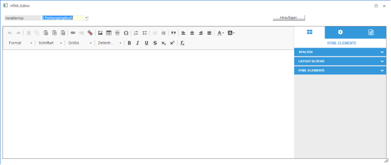
Ø Variablentyp
Über das Feld Variablentyp kann entschieden werden, welche Funktion in weiterer Folge die HTML-Seite haben soll. Dabei gibt es drei Möglichkeiten:
ü 0 Postausgangsbuch
Mit dem Typ
Postausgangsbuch können HTML-Seiten erstellt werden, die als Vorlage für einen
E-Mail-Versand dienen. Dabei steht eine Reihe von Variablen zur Verfügung, die
im Text als Platzhalter eingefügt werden können und dann beim Versand durch die
richtigen Daten ersetzt werden. Der Typ "0 Postausgangsbuch" kann nicht mit
anderen Typen kombiniert werden.
ü 3 Vorlage
Mit dem Typ Vorlage
können "individuelle Vorlagen" aus bestimmten Datenbereichen ausgewählt werden,
wo dann die Daten in weiterer Folge wahlweise nur angezeigt oder aber auch
veränderbar dargestellt werden können.
ü 4 CRM
Mit dem Typ CRM können
Workflows, Aktionsschritte oder CRM-Historien-Eigenschaften in die HTML-Seite
eingebunden bzw. ausgeführt werden.
Ø Vorlagentyp
Das Feld Vorlagentyp steht nur dann zur Verfügung, wenn im Feld "Variablentyp" die Option "3 Vorlagen" gewählt wird. Aus der Auswahllistbox kann der Datentyp gewählt werden, der in der HTML-Seite verarbeitet werden soll. Derzeit werden nur die Typen Personenkonten, Interessenten und Kontakte unterstützt.
Ø Vorlage
Das Feld Vorlage steht nur dann zur Verfügung, wenn im Feld "Variablentyp" die Option "3 Vorlagen" gewählt wird. Damit kann dann die Vorlage gewählt werden, mit der bestimmt wird, welche Felder in der HTML-Seite zur Verfügung stehen. Es können auch mehrere Vorlagen innerhalb einer Seite verwendet werden, allerdings müssen diese Vorlagen vom gleichen Vorlagentyp sein.
Hinweis:
Es können nur Vorlagen vom Typ "Individuelle Formulare" ausgewählt werden, die auch als "WebService-Vorlage" definiert sind.
Ø Workflow
Das Feld Workflow steht nur dann zur Verfügung, wenn im Feld "Variablentyp" die Option "4 CRM" gewählt wird. Hier werden in der Auswahllistbox alle Aktionsschritte und Workflow-Startpunkte angezeigt. Welche Felder in weiter Folge dann in der HTML-Seite zur Verfügung stehen, hängt von der in der Aktion bzw. im Workflow-Startpunkt hinterlegten Vorlage ab. Workflows können auch mit Vorlagen kombiniert werden (um z.B. Stammdateninfos von einem Personenkonto anzuzeigen und dann einen Workflow auszulösen).
Ø Hinzufügen
Durch Anklicken des Hinzufügen-Buttons wird im Einstellungsbereich auf der rechten Seite jeweils das ausgewählte Element hinzugefügt.
Beispiele
Beispiel für Postausgangsbuch:
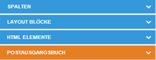
Beispiel für zwei Personenkontenvorlagen:
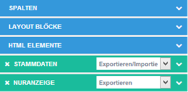
Beispiel für einen Aktionsschritt:
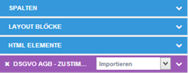
Beispiel für die Kombination von Vorlagen und CRM:
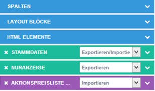
Wenn bereits der Variablentyp "Postausgangsbuch" hinzugefügt wurde und danach ein Variablentyp "Vorlagen" der "CRM" hinzugefügt werden soll (oder umgekehrt) wird eine entsprechende Warnung angezeigt, dass das nicht möglich ist.
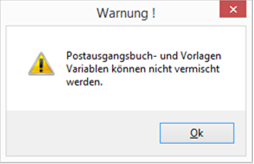
Mit den unterschiedlichen Variablentypen lassen sich auch unterschiedliche HTML-Seiten mit unterschiedlichen Verwendungszwecken erstellen:
ü "Normale" HTML-Seite ohne weitere
Funktion
Eine "normale" HTML-Seite kann Texte und Bilder enthalten und kann
individuell gestaltet werden.
ü HTML-Seite für den Versand via
Postausgangsbuch
Damit kann z.B. ein Text für einen Newsletterversand
gestaltet werden, dabei können auch variable Texte (z.B. persönliche Anrede) mit
verwendet werden. Die so gestalteten Texte können via WinLine MTA auch
analysiert werden.
ü Functional Landingpage mit
speziellen Funktionen
Das sind HTML-Seiten, die mit WinLine Daten
interagieren können. Damit können z.B. Kundendaten angezeigt,
Stammdatenänderungen abgefragt, oder An-/Abmeldungen zu Newsletter verwaltet
werden. Diese Seiten arbeiten auch mit Platzhaltern, die dann beim Aufruf mit
den Daten des Kunden befüllt werden.
Wenn definiert wurde, wofür die HTML-Seite erstellt werden soll, kann diese bearbeitet / gestaltet werden. Hierfür stehen folgende Elemente zur Verfügung:
Rechter Arbeitsbereich "HTML-Elemente" - Spalten
Durch einen Klick auf den kleine Pfeil neben der Bezeichnung Spalten () wird ein Bereich geöffnet, aus dem unterschiedliche Spaltendefinitionen ausgewählt und in die Seite (Body) gezogen werden.
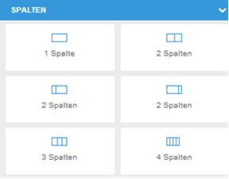
Abhängig davon werden dann die Anzahl der Spalten übernommen und können beliebig gefüllt werden.
Hinweis:
Es wird empfohlen, zuerst eine Spaltendefinition für die Seite zu hinterlegen und dann alle weiteren Elemente in diese Spalten einzufügen - damit wird die Positionierung bzw. die Gesaltung und das Design der Seite wesentlich vereinfacht.
Rechter Arbeitsbereich "HTML-Elemente" - Layout Blöcke
In diesem Bereich befinden sich einige vorgefertigte Layouts die auch via Drag&Drop in die Seite übernommen werden können. Diese Layouts können auch selbst definiert werden, die Layouts werden im Verzeichnis ..\ObjectEditor\templates gespeichert und könnten bei Bedarf dort auch gelöscht werden.
Wenn Layouts "zusammengestellt" werden
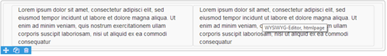
können sie mit dem Button "Textblock speichern" auch im Bereich "Layout Blöcke" für weitere Verwendungen abgelegt werden. Dadurch wird ein Dialogfenster geöffnet, wo der Name des Layout Blocks hinterlegt und gespeichert werden kann.
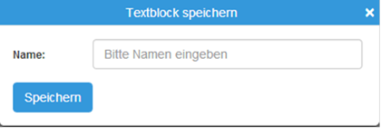
Rechter Arbeitsbereich "HTML-Elemente" - HTML Elemente
Hier werden einige Basis-Elemente zur Verfügung gestellt, mit denen die Seite gestaltet werden kann. Abhängig von der gewählten Option können ggf. auch Einstellungen vorgenommen werden. Die Elemente sind nur Vorschläge, die auch individuell geändert werden können. Die HTML Elemente können entweder direkt in die Seite (Body) oder aber auch in Spaltendefinitionen gezogen werden. Nachfolgend werden die einzelnen Elemente beschrieben:
Ø Textblock
Ein Textblock ist ein reiner Text, der entsprechend angepasst werden muss. Es gibt aber von der Formatierung her keine Besonderheiten (die kann aber auch verändert werden). In ein Textblock-Element können auch Texte von anderen Programmen mit der Tastenkombination STRG + V kopiert werden.
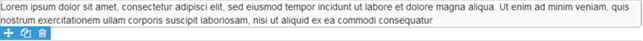
Ø Kommentar
Ein Kommentar ist ein Textblock, der von der Schrift her etwas größer und eingerückt dargestellt wird. Am Beginn des Absatzes wird ein grafisches Element (grauer Balken) dargestellt.
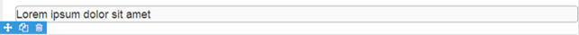
Ø Überschrift
Eine Überschrift wird mit einer großen Schriftart, aber ohne Einrückung oder anderen Besonderheiten dargestellt.
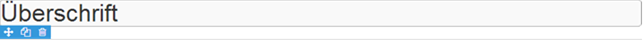
Ø Trennstrich
Ein Trennstrich ist eine horizontale Linie, die über den gesamten Bereich dargestellt wird, in den das Element gezogen wird.
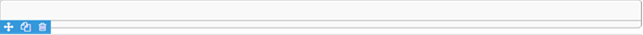
Ø Liste
Mit diesem Element wird eine numerische Aufzählung dargestellt, die auch beliebig erweitert werden kann, indem einfach weitere Absätze hinzugefügt werden (durch Drücken der Enter-Taste).
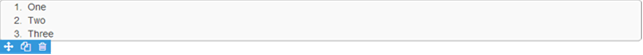
Ø Tabelle
Damit wird eine Tabelle mit drei Spalten und zwei Zeilen eingefügt, wobei die Tabelle noch individuell verändert werden kann.
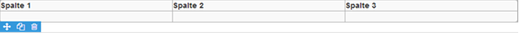
Dazu stehen über die rechte Maustaste einige Einstellungen zur Verfügung:
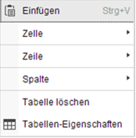
Im Bereich Zelle gibt es folgende Möglichkeiten, die selbsterklärend sind, wobei die Optionen auch davon abhängig sind, in welcher Zelle man steht:
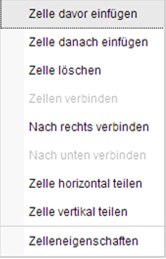
In den Zelleneigenschaften können noch folgende Optionen gesetzt werden, wobei auch hier die Felder selbsterklärend sind:
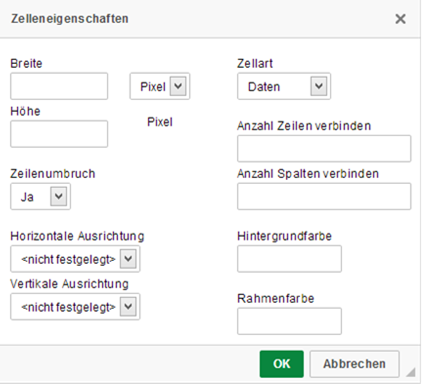
Im Bereich Zeile bzw. Spalte stehen folgende selbsterklärende Optionen zur Verfügung:
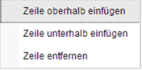
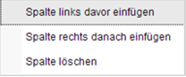
Mit der Option "Tabelle löschen" kann die markierte Tabelle wieder entfernt werden.
Über die Option "Tabellen-Eigenschaften" können noch einige Einstellungen vorgenommen werden.
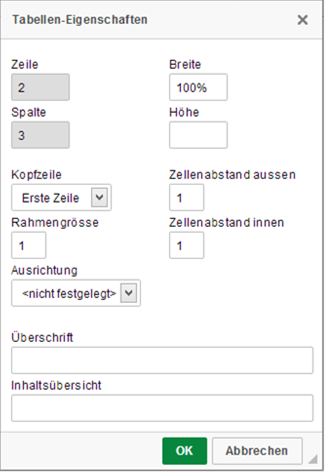
Ø Breite
Die Breite der Tabelle kann in Pixel (mit px) oder in Prozent (mit %-Zeichen) angegeben werden.
Ø Kopfzeile
Damit kann definiert werden, ob und welche "Führungstexte" in der Tabelle vorhanden sind:
ü Keine
Es gibt keine
"Führungstexte" bzw. "Überschriften".
ü Erste Zeile
Die Spalten der
ersten Zeile werden in Fettschrift dargestellt und definieren somit die
"Überschriften" der Spalten.
ü Erste Spalte
Die erste Spalte
aller Zeilen wird in Fettschrift dargestellt und definieren somit die
"Führungstexte" der Zeilen.
ü Beide
Sowohl die Spalten der
erste Zeile sowie die erste Spalte aller Zeilen definieren die Überschriften
bzw. Führungstexte aller Zeilen und Spalten und werden somit in Fettschrift
dargestellt.
Ø Zeilenabstand aussen
Damit kann der Abstand der Zeilen / Spalten zueinander definiert werden.
Ø Rahmengröße
Hier kann definiert werden, mit welcher Linienstärke der Rahmen dargestellt wird. Bei 0 werden die Linien gar nicht mehr angezeigt.
Ø Ausrichtung
Sofern die Tabelle nicht auf 100% Breite gestellt ist, kann hier definiert werden, wie die Tabelle ausgerichtet sein soll - linksbündig, zentriert oder rechtsbündig.
Ø Überschrift
Wenn in diesem Feld ein Text eingetragen wird, dann wird dieser über der Tabelle als Überschrift angezeigt.
Ø Link
Mit dem Link-Element kann ein Link-Button eingefügt werden. D.h. in der HTML-Seite wird dann ein Button angezeigt, auf den man klicken kann. Dabei können folgende Einstellungen vorgenommen werden, wenn ein Doppelklick auf den Button durchgeführt wird:
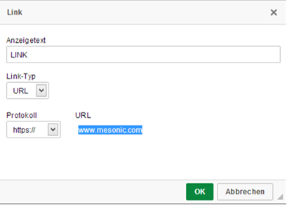
Ø Anzeigetext
Hier kann ein Text eingegeben werden, der in weiter Folge den Link darstellen soll, der Standardvorschlag lautet "LINK".
Ø Link-Typ
Aus der Auswahllistbox kann der Typ des Links ausgewählt werden. Dabei stehen die Typen "URL" und "E-Mail" zur Verfügung. Abhängig von der Auswahl stehen dann auch unterschiedliche Eingabefelder zur Verfügung.
Ø Protokoll
Aus der Auswahllistbox kann das Protokoll der URL ausgewählt werden, wobei die Typen "http://", "https://", "ftp://", "news://" und "<andere>" zur Verfügung stehen.
Ø URL
Hier kann dann die restliche Zieladresse eingetragen werden. Wenn der Typ "<andere>" gewählt wird, muss hier die komplette Adresse hinterlegt werden.
Ø E-Mail-Adresse
Hier kann eine E-Mail-Adresse vorgegeben werden, die beim Anklicken des Links bzw. beim Erstellen des Mails verwendet werden soll.
Ø Betreffzeile
In der Betreffzeile kann ein Text eingegeben werden, der im Mail dann auch vorgeschlagen wird.
Ø Nachrichtentext
Auch der Nachrichtentext kann vorgegeben werden.
Ø Speichern-Button
Mit diesem Element kann eine Speichern-Funktion aufgerufen werden. Damit können dann - wenn in der HTML-Seite Vorlagen mit Daten enthalten sind, oder eine CRM-Aktion ausgeführt werden soll - die Daten in die MesoCloud gestellt werden. Wenn in einer interaktiven Seite (Seite mit Daten-Vorlagen oder mit CRM-Aktionen) kein Speichern-Button positioniert wird, dann wird dieser vom Programm automatisch auf der rechten oberen Seite eingefügt. Beim Speichern-Button kann nur der Text geändert werden bzw. gibt es noch erweiterte "Felder Einstellungen".
Ø Image
Über das Image-Element können Bilder eingefügt werden, wobei es hier eine Reihe von Einstellungsmöglichkeiten gibt, die in zwei unterschiedlichen Registern aufgeteilt sind:
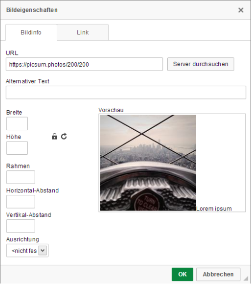
Ø URL
In diesem Feld kann der Verweis auf das Bild eingegeben werden, wenn sich das Bild auf einer Web-Seite befindet. Alternativ kann durch Anklicken des "Server durchsuchen"-Buttons eine Grafik vom WinLine-Server ausgewählt werden. Diese Grafik wird dann in weiterer Folge entsprechend verarbeitet, damit diese z.B. beim Versenden berücksichtigt wird. Wen die Grafik ausgewählt wird, wird sie - gemeinsam mit einem Beispieltext - im Bereich Vorschau angezeigt, wobei das Bild in Originalgröße dargestellt wird. Die weiteren Einstellungen werden in der Vorschau auch angezeigt.
Ø Alternativer Text
In diesem Feld kann der Inhalt des Bildes verbal beschrieben werden. Der alternative Text wird im HTML-Code dann im img-Tag alt="" angezeigt.
Ø Breite
Wenn die Grafik nicht in Originalgröße dargestellt werden soll, so kann hier die gewünschte Breite eingegeben werden. Sofern die Option "Größenverhältnis beibehalten" aktiviert () ist, wird auch die Höhe verändert. Die Breite kann allerdings auch in Prozent (z.B. 50%) angegeben werden, dann kann die Höhe gesondert eingegeben werden.
Ø Höhe
Die Höhe der Grafik kann nur dann eingegeben werden, wenn die Option "Größenverhältnis beibehalten" deaktiviert () ist, oder wenn die Breite in Prozent eingetragen wurde. Mit dem Button "Größe zurücksetzten" () kann die Originaleinstellung wieder hergestellt werden.
Ø Rahmen
Über das Feld Rahmen kann bestimmt werden, ob und mit welcher Stärke ein Rahmen um die Grafik gezogen werden soll. Je höher der eingetragenen Wert, desto dicker wird der Rahmen.
Ø Ausrichtung
Über die Ausrichtung kann festgelegt werden, ob das Bild Links, Rechts oder Zentriert dargestellt werden soll.
Im Register "Link" können noch folgende Felder bearbeitet werden:
Ø URL
Wenn das Bild zusätzlich mit einem Link versehen werden soll (durch einen Klick auf das Bild soll eine Internetseite aufgerufen werden), kann hier der Verweis, die Internetadresse hinterlegt werden.
Ø Zielseite
In diesem Bereich kann festgelegt werden, wie die Zielseite geöffnet werden soll.
Rechter Arbeitsbereich "Variablen"
Innerhalb der Seite können auch Variablen aus der WinLine angewendet werden. Das ist abhängig davon, ob bzw. welche Variablentypen in der Seite hinzugefügt wurden. Dazu muss zuerst im oberen Bereich die Variablenauswahl durchgeführt und der Button "Hinzufügen" angeklickt werden. Dadurch werden im Bereich "HTML Elemente" neue Elemente freigeschalten.
Beispiel für Postausgangsbuch:
Beispiel für zwei Personenkontenvorlagen:
Beispiel für einen Aktionsschritt:
Beispiel für die Kombination von Vorlagen und CRM:
Jedes dieser Elemente (mit Ausnahme vom Postausgangsbuch) können durch einen Klick auf das X wieder entfernt werden. Bei den Elementen "Vorlagen" und "CRM" können auch unterschiedliche Funktionen aus der Auswahllistbox aufgerufen werden. Abhängig davon ist auch die Funktionalität der HTML-Seite gegeben:
ü Importieren
Mit dieser Option
können in der HTML-Seite erfasste Daten in die WinLine zurückgeschrieben werden,
wie z.B. bei oder dergleichen. In der Seite eingebaute Variablen können auch
eingegeben werden.
ü Exportieren (nur bei
Vorlagen)
Mit dieser Option werden bestehende Daten (z.B. Kontaktdaten oder
Adressinformationen) nur angezeigt. D.h. in der Seite eingebaute Variablen sind
"Read Only".
ü Exportieren/Importieren (nur bei
Vorlagen)
Mit dieser Option werden Daten angezeigt, diese können aber auch
verändert und dann wieder gespeichert werden.
Durch einen Klick auf das Symbol (Farbe abhängig vom Variablentyp) werden alle zur Verfügung stehenden Variablen (abhängig von der Vorlage) angezeigt. Im Eingabefeld kann ein Suchbegriff eingegeben werden, dadurch wird die Liste der Variablen entsprechend verkürzt. Durch einen Klick auf den gewünschten Eintrag wird dieser an die Stelle der Seite übernommen, wo der Cursor steht. Diese Einträge können auch wieder gelöscht werden.
Rechter Arbeitsbereich "Felder Einstellungen"
Wenn in der Seite Elemente eingefügt wurden, so können über das Symbol Felder Einstellungen noch weitere Einstellungen Vorgenommen werden, wobei der Umfang der Einstellungen vom jeweiligen Element abhängig ist:
Ø Hintergrundfarbe
Hier kann entweder durch einen Mausklick in der Farbauswahl oder durch Eingabe eines Hex-Wertes die Hintergrundfarbe des Elements eingetragen werden.
Ø Abstand
In diesen vier Feldern kann der jeweilige Abstand vom Rand in Pixel hinterlegt werden. Damit kann z.B. der Textabstand in einer Tabelle variabel angepasst werden.
Ø Überschrift
Wenn ein Element "Überschrift" eingefügt wurde, kann hier zusätzlich das "Heading" eingestellt werden.
Ø Button
Wenn ein Link-Button bzw. ein MesoCloud-Link eingefügt wurde, kann hier zusätzlich die Buttonlänge definiert werden.
Ø Weiterleitung bei Erfolg
Wenn das Element "Speichern-Button" aktiv ist, kann hier noch eine zusätzliche URL eingetragen werden, die aufgerufen werden soll, wenn die Speicherung der Seite erfolgreich war.
Ø Buttonfarbe
In diesem Bereich kann die Farbe des Buttons definiert werden. Durch einen Klick auf den gewünschten Bereich wird die Farbe markiert und darunter als Hex-Wert angezeigt, der auch indiv. geändert werden kann.
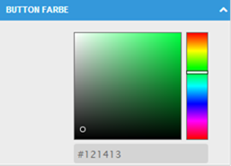
Ø Bildeinstellungen
Wenn ein Bild über die HTML-Elemente eingefügt wird, können hier noch die Höhe und die Breite der Grafik bzw. auch die Url zur Grafik (wie man das auch in den Bildeigenschaften definieren kann) verändern.
Rechter Arbeitsbereich "Seiten Einstellungen"
In den Seiten Einstellungen, die über das Symbol angewählt werden können, sind folgende Einstellungen möglich:
Ø Breite
In diesem Feld kann die Seitenbreite definiert werden. Standardmäßig wird hier ein Wert von 960 Pixel vorgeschlagen.
Ø Hintergrundfarbe
In diesem Bereich kann die Hintergrundfarbe für die Seite und für Html (Container / Arbeitsblatt - Rand von der Seite) definiert werden. Durch einen Klick auf die Auswahllistbox wird ein kleines Fenster geöffnet, wo die Farbe definiert werden kann:
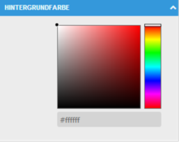
Die Farbe kann wahlweise per Mausklick ausgewählt oder durch Eingabe eines Hex-Wertes definiert werden.
Toolbar
Unabhängig davon, ob nun Text in Spalten oder über Layout-Blöcke erfasst wurden, oder ob der Text frei geschrieben wird, gibt es noch eine Reihe von weiteren Gestaltungsmöglichkeiten bzw. Optionen, die angewendet werden können. Diese befinden sich in der Buttonleiste und werden der Reihe nach beschrieben:
Rückgängig
Mit diesem Button kann die letzte Aktion rückgängig gemacht werden, wobei max. 20 Aktionen gespeichert werden.
Wiederherstellen
Mit diesem Button kann die letzte Aktion wiederhergestellt gemacht werden, wobei max. 20 Aktionen gespeichert werden
Link
Mit diesem Button kann ein Link eingebaut werden, wobei es eine Reihe von Einstellungsmöglichkeiten gibt.
Ø Anzeigetext
Hier wird der Text eingegeben, der in weiter Folge den Link darstellen soll. Wurde beim Anklicken des Buttons bereits ein Text markiert, wird dieser hier vorgeschlagen.
Ø Link-Typ
Aus der Auswahllistbox kann der Typ des Links ausgewählt werden. Dabei stehen die Typen "URL" und "E-Mail" zur Verfügung. Abhängig von der Auswahl stehen dann auch unterschiedliche Eingabefelder zur Verfügung.
Ø Protokoll
Aus der Auswahllistbox kann das Protokoll der URL ausgewählt werden, wobei die Typen "http://", "https://", "ftp://", "news://" und "<andere>" zur Verfügung stehen.
Ø URL
Hier kann dann die restliche Zieladresse eingetragen werden. Wenn der Typ "<andere>" gewählt wird, muss hier die komplette Adresse hinterlegt werden.
Ø E-Mail-Adresse
Hier kann eine E-Mail-Adresse vorgegeben werden, die beim Anklicken des Links bzw. beim Erstellen des Mails verwendet werden soll.
Ø Betreffzeile
In der Betreffzeile kann ein Text eingegeben werden, der im Mail dann auch vorgeschlagen wird.
Ø Nachrichtentext
Auch der Nachrichtentext kann vorgegeben werden.
Ø Link entfernen
Dieser Button ist nur dann aktiv, wenn der Focus auf einem Link gesetzt ist. Damit kann ein vorhandener Linke wieder entfernt werden.
MesoCloud Link einfügen
Wenn dieser Button angeklickt wird, dann wird ein Fenster geöffnet, in dem bereits alle in der MesoCloud gespeicherten HTML-Seiten angezeigt werden. Dabei werden Seiten, die mit dem Variablentyp "Postausgangsbuch" gespeichert wurden grau und Seiten, die mit dem Variablentyp "Vorlage" oder "CRM" gespeichert wurden, blau angezeigt.
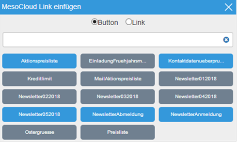
Zuerst kann entschieden werden, ob der Verweis auf die FLP als Button oder als Link eingefügt werden soll.
Im Eingabefenster kann auch ein Suchbegriff eingegeben werden, der die Liste dann entsprechend reduziert (sofern Suchergebnisse vorhanden sind). Durch einen Klick auf einen Eintrag wird dieser - gemäß der Einstellung Button oder Link - in das Bearbeitungsfenster übernommen. Durch einen Doppelklick auf den Eintrag können die Einstellungen überarbeitet werden, bzw. können - wenn der Verweis als Button eingefügt wurden - über die "Felder Einstelllungen" zusätzliche Einstellungen vorgenommen werden.
Bild
Über den Bild-Button können Bilder eingefügt werden, wobei es eine Reihe von Einstellungsmöglichkeiten gibt, die in zwei unterschiedlichen Registern aufgeteilt sind:
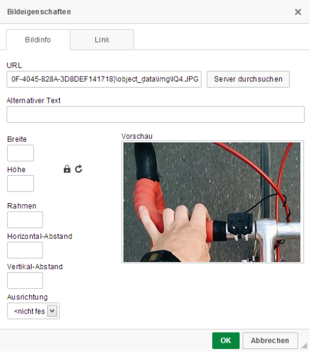
Ø URL
In diesem Feld kann der Verweis auf das Bild eingegeben werden, wenn sich das Bild auf einer Web-Seite befindet. Alternativ kann durch Anklicken des "Server durchsuchen"-Buttons eine Grafik vom WinLine-Server ausgewählt werden. Diese Grafik wird dann in weiterer Folge entsprechend verarbeitet, damit diese z.B. beim Versenden berücksichtigt wird. Wen die Grafik ausgewählt wird, wird sie - gemeinsam mit einem Beispieltext - im Bereich Vorschau angezeigt, wobei das Bild in Originalgröße dargestellt wird. Die weiteren Einstellungen werden in der Vorschau auch angezeigt.
Ø Alternativer Text
In diesem Feld kann der Inhalt des Bildes verbal beschrieben werden. Der alternative Text wird im HTML-Code dann im img-Tag alt="" angezeigt.
Ø Breite
Wenn die Grafik nicht in Originalgröße dargestellt werden soll, so kann hier die gewünschte Breite eingegeben werden. Sofern die Option "Größenverhältnis beibehalten" aktiviert () ist, wird auch die Höhe verändert. Die Breite kann allerdings auch in Prozent (z.B. 50%) angegeben werden, dann kann die Höhe gesondert eingegeben werden.
Ø Höhe
Die Höhe der Grafik kann nur dann eingegeben werden, wenn die Option "Größenverhältnis beibehalten" deaktiviert () ist, oder wenn die Breite in Prozent eingetragen wurde. Mit dem Button "Größe zurücksetzten" () kann die Originaleinstellung wieder hergestellt werden.
Ø Rahmen
Über das Feld Rahmen kann bestimmt werden, ob und mit welcher Stärke ein Rahmen um die Grafik gezogen werden soll. Je höher der eingetragenen Wert, desto dicker wird der Rahmen.
Ø Ausrichtung
Über die Ausrichtung kann festgelegt werden, ob das Bild Links, Rechts oder Zentriert dargestellt werden soll.
Im Register "Link" können noch folgende Felder bearbeitet werden:
Ø URL
Wenn das Bild zusätzlich mit einem Link versehen werden soll (durch einen Klick auf das Bild soll eine Internetseite aufgerufen werden), kann hier der Verweis, die Internetadresse hinterlegt werden.
Ø Zielseite
In diesem Bereich kann festgelegt werden, wie die Zielseite geöffnet werden soll.
Tabelle
Mit dem Tabelle-Button kann eine Tabelle eingefügt werden, wobei folgende Einstellungen zur Verfügung stehen:
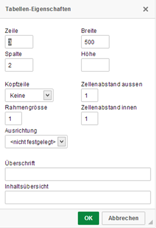
Ø Zeile
Anzahl der Zeilen, mit der die Tabelle erstellt werden soll. Die Anzahl kann in der Folge auch noch verändert werden (rechte Maustaste).
Ø Spalte
Anzahl der Spalten, mit der die Tabelle erstellt werden soll. Die Anzahl kann in der Folge auch noch verändert werden (rechte Maustaste).
Ø Breite
Die Breite der Tabelle kann in Pixel (mit px) oder in Prozent (mit %-Zeichen) angegeben werden.
Ø Kopfzeile
Damit kann definiert werden, ob und welche "Führungstexte" in der Tabelle vorhanden sind:
ü Keine
Es gibt keine
"Führungstexte" bzw. "Überschriften".
ü Erste Zeile
Die Spalten der
ersten Zeile werden in Fettschrift dargestellt und definieren somit die
"Überschriften" der Spalten.
ü Erste Spalte
Die erste Spalte
aller Zeilen wird in Fettschrift dargestellt und definieren somit die
"Führungstexte" der Zeilen.
ü Beide
Sowohl die Spalten der
erste Zeile sowie die erste Spalte aller Zeilen definieren die Überschriften
bzw. Führungstexte aller Zeilen und Spalten und werden somit in Fettschrift
dargestellt.
Ø Zeilenabstand aussen
Damit kann der Abstand der Zeilen / Spalten zueinander definiert werden.
Ø Rahmengröße
Hier kann definiert werden, mit welcher Linienstärke der Rahmen dargestellt wird. Bei 0 werden die Linien gar nicht mehr angezeigt.
Ø Ausrichtung
Sofern die Tabelle nicht auf 100% Breite gestellt ist, kann hier definiert werden, wie die Tabelle ausgerichtet sein soll - linksbündig, zentriert oder rechtsbündig.
Ø Überschrift
Wenn in diesem Feld ein Text eingetragen wird, dann wird dieser über der Tabelle als Überschrift angezeigt.
Wenn die Tabelle einmal erstellt wurde, können über die rechte Maustaste weitere Aktionen durchgeführt werden:
Im Bereich Zelle gibt es folgende Möglichkeiten, die selbsterklärend sind, wobei die Optionen auch davon abhängig sind, in welcher Zelle man steht:
In den Zelleneigenschaften können noch folgende Optionen gesetzt werden, wobei auch hier die Felder selbsterklärend sind:
Im Bereich Zeile bzw. Spalte stehen folgende selbsterklärende Optionen zur Verfügung:
Mit der Option "Tabelle löschen" kann die markierte Tabelle wieder entfernt werden. Mit der Option "Tabellen Eigenschaften" können die "Basiseinstellungen"
Horizontale Linie einfügen
Mit diesem Button wird eine horizontale Linie eingefügt, es können keine weiteren Einstellungen vorgenommen werden.
Sonderzeichen einfügen
Wenn dieser Button angeklickt wird, dann wird ein Fenster geöffnet, in der eine Reihe von Sonderzeichen angeführt wird:
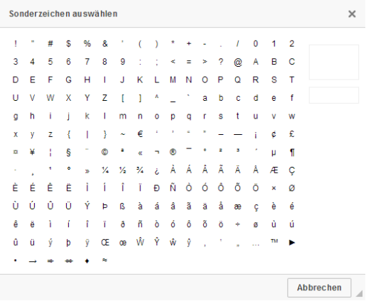
Wenn man mit der Maus über die einzelnen Zeichen fährt, wird auf der rechten Seite die Vorschau dazu angezeigt. Mit einem Klick auf das Zeichen wird dieses in den Text (an die Stelle, wo der Cursor steht) übernommen.
Nummerierte Liste einfügen / entfernen
Dabei handelt es sich um einen "Aktivierungsbutton", d.h. wenn dieser aktiviert wird, dann werden alle nachfolgenden Texte als nummerierte Liste (beginnend mit 1.) eingefügt. Wenn der Button wieder deaktiviert wird, dann kann wieder "normaler" Text erfasst werden. Einstellungen bezüglich der Nummerierung sind nicht möglich.
Liste
Dabei handelt es sich um einen "Aktivierungsbutton", d.h. wenn dieser aktiviert wird, dann werden alle nachfolgenden Texte mit einem Aufzählungszeichen erfasst. Wird der Button deaktiviert, dann wird wieder "normaler" Text erfasst.
Einzug verringern bzw. Einzug erhöhen
Über die Buttons "Einzug verringern" bzw. "Einzug erhöhen", die nur dann aktiv sind, wenn ein Element "Nummerierte Liste" oder "Liste" in Bearbeitung ist, kann entweder eine Aufzählung "verringert" oder "ausgeschalten" oder eine zusätzliche Aufzählungsebene hinzugefügt werden.
Zitatblock
Dabei handelt es sich um einen "Aktivierungsbutton", d.h. wenn dieser aktiviert wird, dann wird der danach erfasste Text in einer größeren Schrift mit einem grauen Balken auf der linken Seite dargestellt. Der Zitatblock kann auch zusätzlich zu anderen Eigenschaften (Nummerische Liste, Liste, …) verwendet werden.
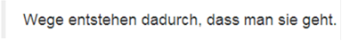
Formatierungsanweisungen
Mit den Buttons "Linksbündig", "Zentriert", "Rechtsbündig" und Blocksatz kann der erfasste Text wie gewünscht formatiert werden.
Textfarbe
Aus der Auswahllistbox kann die Farbe gewählt werden, in der der nachfolgend erfasste Text bzw. der markierte Text dargestellt werden soll. Diese Einstellung wirkt auch im Zusammenhang mit der Hintergrundfarbe.
Hintergrundfarbe
Aus der Auswahllistbox kann die Farbe gewählt werden, in der der nachfolgend erfasste Text bzw. der markierte Text hinterlegt werden soll. Diese Einstellung wirkt auch im Zusammenhang mit der Textfarbe.
Zusätzlich dazu können noch Einstellung bezüglich der Schriftgestaltung vorgenommen werden. Dazu gibt es eine Reihe von Optionen, die von der Bedienung her nicht näher beschrieben werden:
ü Format
Auswahl eines der
vorgegebenen Formatvorlagen.
ü Schriftart
Auswahl einer der
vorgegebenen Schriftarten.
ü Größe
Auswahl einer
Schriftgröße
ü Zeilenhöhe
Auswahl des
Zeilenabstandes.
Dazu gibt es noch die Schriftattribute wie Fett, Kursiv, Unterstrichen, Durchgestrichen, Tiefgestellt, Hochgestellt und einen eigenen Button für "Formatierung entfernen" - damit wird der Text wieder in Normalschrift gemäß Kapitelformatierung dargestellt.
Buttons
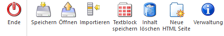
Ø Speichern
Durch Anklicken des Speichern-Button kann entschieden werden, wie die Seite gespeichert werden soll. Dabei stehen drei Varianten zur Verfügung:
ü Datei
Wenn die Datei-Form
gewählt wird, dann wird der Windows-Dialog geöffnet, und man kann sich ein
Verzeichnis auswählen, in das die Seite gespeichert wird. In das Verzeichnis
wird dann eine Datei "edit.html", eine Datei "index.html" und ein Verzeichnis
"object_data" mit event. noch zusätzlichen Dateien wie Grafiken etc.
erstellt.
ü SQL-Datenbank
Wenn die
Speicherung in der SQL-Datenbank gewählt wird, wird ein kleines Fenster
geöffnet, in dem der Name der Seite eingegeben werden kann. Der Name darf keine
Sonderzeichen oder Leerzeichen enthalten. Mit dem Speichern-Button wird die
Seite dann in der Datenbank abgespeichert.
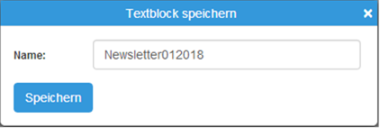
ü MesoCloud
Wenn die Speicherung
in der MesoCloud erfolgen soll, wird ein kleines Fenster geöffnet, in dem der
Name der Seite eingegeben werden kann. Der Name der Seite darf keine
Sonderzeichen oder Leerzeichen enthalten. Dazu kann auch noch ein
Gültigkeitsbereich der Seite von - bis definiert werden. Mit dem
Speichern-Button wird die Seite in der Datenbank gespeichert und in der
MesoCloud publiziert und steht somit für einen externen Zugriff bzw. zur
Verlinkung z.B. in einem Newsletter zur Verfügung.
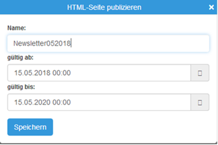
Ø Öffnen
Durch Anklicken des Öffnen-Button können bereits in der WinLine-Datenbank gespeicherte HTML-Seiten geladen werden. Dabei werden in einem Fenster alle vorhandenen Seiten dargestellt:
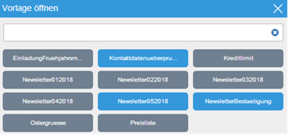
Über die Farbe ist erkenntliche, um welchen Typ von HTML-Seiten es sich handelt: die blauen Elemente sind Seiten mit eingebunden Vorlagen, die grauen Elemente sind "normale" HTML-Seiten. Über das Eingabefeld kann auch ein Suchbegriff eingegeben werden, anhand dessen dann das Suchergebnis entsprechend verfeinert wird. Durch einen einfachen Klick auf den gewünschten Eintrag wird dieser in das Bearbeitungsfenster übernommen.
Ø Importieren
Über den Importieren-Button können auf der Festplatte gespeicherte HTM- oder HTML-Dateien geöffnet und bearbeitet werden. Dazu wird der Windows-Dialog zum Öffnen von Dateien verwendet, wo dann die gewünschte Datei ausgewählt werden kann.
Ø Inhalt löschen
Mit diesem Button können bereits vorgenommene Änderungen zurückgesetzt werden. Damit erhält man also wieder eine leere Seite.
Ø Neue HTML Seite
Durch Anklicken des Buttons "Neue HTML Seite" wird das Fenster "geleert" und es kann mit einer blanken Seite ohne Inhalt begonnen werden.
Ø Verwaltung
Durch Anklicken des Verwaltung-Buttons wird ein Fenster geöffnet, in dem alle Seiten angezeigt werden, die in der SQL-Datenbank bzw. in der MesoCloud gespeichert wurden.
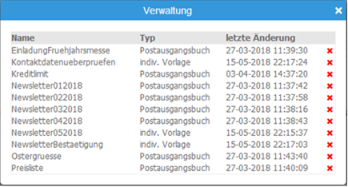
Darin ersichtlich sind der Name der Seite, der Typ, mit dem die Seite gespeichert wurde, und das letzte Änderungsdatum. Durch einen Klick auf das rote X wird nach einer Rückfrage die Seite aus der Datenbank gelöscht.
Ø Ende
Durch Anklicken des ENDE-Buttons wird eine Meldung ausgegeben:
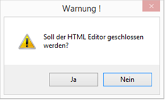
Da keine Abfrage erfolgen kann, ob Änderungen gespeichert werden sollen, steht hier der Focus standardmäßig auf "NEIN". D.h. wenn unbeabsichtigt die ESC-Taste gedrückt und die Meldung mit Enter bestätigt wird, bleibt man trotzdem im Editor und der Inhalt geht nicht verloren.